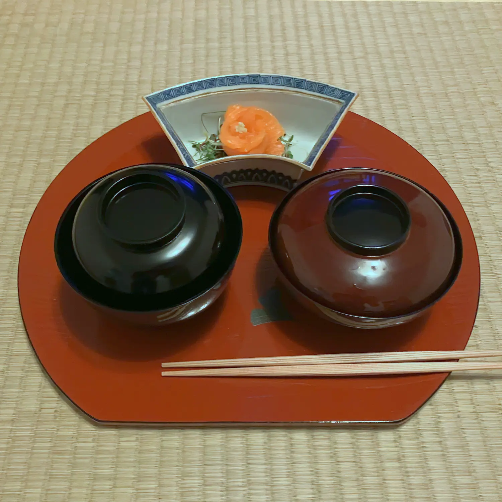
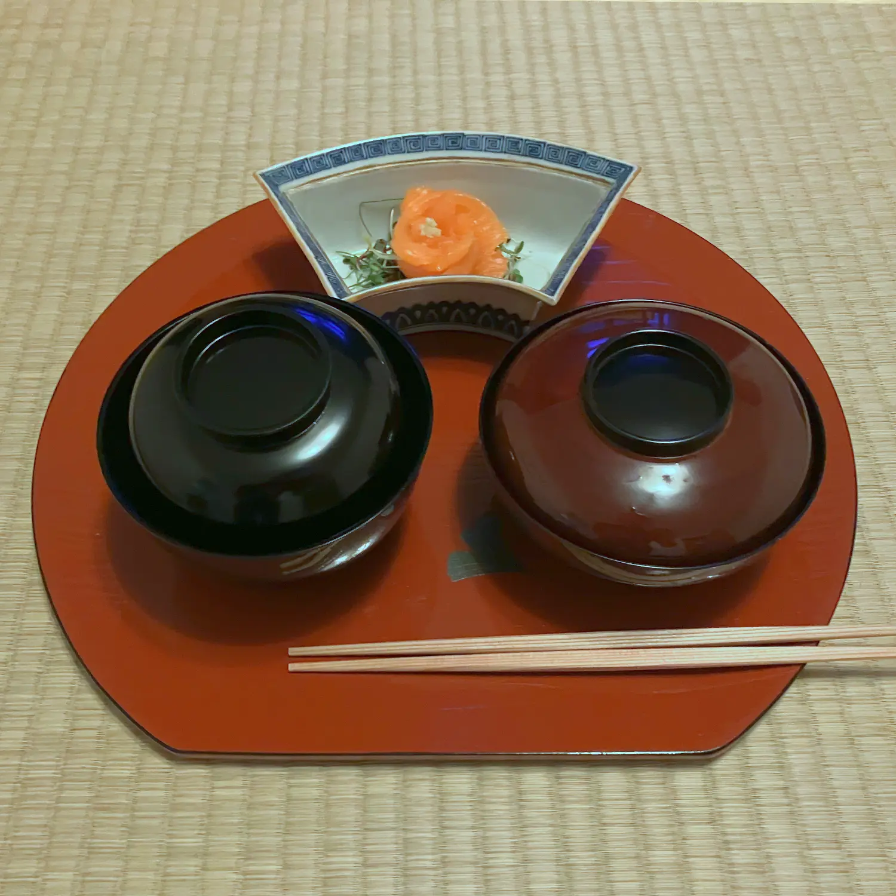

Tea as a Zen Exercise
「お茶の禅修行」

Tea as a Zen Exercise「お茶の禅修行」
June 28, 2025No stereotype about tea is as persistent as the idea that it exists solely for meditation. It’s understandable, though — stories often describe how the tea plant sprouted from Buddha’s eyelids or how monks drink tea to stay awake during meditation. Throughout the history of the Japanese tea ceremony, there have been masters who believed that "true tea" could only be understood in the context of Zen Buddhism.
While this lecture series highlights many different ways to engage with tea, this particular presentation focuses on its connection to Zen. We’ll discuss concepts like wabi sabi and chanoyu samadhi, the enlightenment that comes through drinking tea.
This presentation takes place at hōmu in Basel. Presentations take place at 13:00 and 15:00.
Book (45 CHF) Close Window
Tea as a Reflection of the Seasons
「å£ç¯€ã®åæ˜ ã¨ã—ã¦ã®ãŠèŒ¶ã€
Tea as a Reflection of the Seasons「å£ç¯€ã®åæ˜ ã¨ã—ã¦ã®ãŠèŒ¶ã€
July 19, 2025While we divide our year into four seasons, cultivated Japanese people recognize 72 distinct micro-seasons. This reflects the sensitivity poets and tea practitioners develop, celebrating even the smallest changes in nature. In the tearoom, this sense of seasonality plays a central role: the arrangement and selection of utensils evolves throughout the year, creating a rhythm that oscillates between anticipation and wistful joy for things like fresh eggplants or the sound of cicadas on a summer evening.
Especially today, as we feel the impacts of climate change, the tea ceremony offers a space to reconnect with and deepen our appreciation for the natural world.
This presentation takes place at hōmu in Basel. Presentations take place at 13:00 and 15:00.
Book (45 CHF) Close Window
Tea as a Sensory Experience
「お茶の感覚体験」

Tea as a Sensory Experience「お茶の感覚体験」
May 17, 2025What does the host do to bring out the best flavor in a cup of tea? Of course, the quality of the tea itself is key, but technical aspects also matter: the water, its temperature, and the preparation process. Beyond that, there are subtler elements that influence the guest's experience — a tea served at a bustling train station won’t have the same effect as one enjoyed in the serene, carefully curated setting of a Japanese tea ceremony.
This presentation dives into all these factors that shape the taste of tea in the Japanese tea ceremony.
This presentation takes place at hōmu in Basel. Presentations take place at 13:00 and 15:00.
Close Window
Introduction to Tea Cuisine
「茶èœå¸ã®ç´¹ä»‹ã€
 

Introduction to Tea Cuisine「茶èœå¸ã®ç´¹ä»‹ã€
March 30, 2025To hold a tea invitation according to all the rules in the book means to serve the best possible bowl of tea to your guests. That entails boiling the water over charcoal in their company. During the time the water needs to come to a boil, the host originally served a simple meal, which in the centuries developed into its own art form which today we know as cha kaiseki. This cuisine puts a special emphasis on the seasons and the bowls, in which the food is served. Its taste is subtle, as not to overpower the tea that follows it.
For this event, you receive a 5 course meal followed by a bowl of tea, accompanied by illuminating information (in German) about the history and the logic of this tea cuisine.
Close Window
Tea as a Performance
「お茶のパフォーマンス」


Tea as a Performance「お茶のパフォーマンス」
February 22, 2025With its choreographed movements, the Japanese tea ceremony can often seem a bit rigid. But what happens when both guest and host fully immerse themselves in the prescribed dialogues and sequences? Does it then truly become a complete work of art where the line between observer and performer blurs? And how is this orchestrated within the tearoom?
This presentation aims to decode what a guest contributes to a successful tea invitation. While based on the perspective of the tea ceremony, the insights seamlessly transition into the art of being a good guest in everyday life.
This presentation takes place at hōmu in Basel. Presentations take place at 13:00 and 15:00.
Close WindowTea as an Invitiation
「お茶のお誘い」

Tea as an Invitiation「お茶のお誘い」
January 18, 2025The tea ceremony could better be named an invitation with tea. In a true ceremony, guests are treated to an artful four-hour experience: food, sake, incense, and of course, tea. This presentation explores what makes a good host within the concept of a tea invitation, a perspective that's easy to understand in the West, where (formal) invitations hold significant value. Yet, it remains fascinating, as the Japanese tea ceremony arrives at very different answers.
This presentation lasts about 60 minutes; and will feature an extensive explanation of the topic of the day, a traditional Japanese sweet as well as a presentation of the formal presentation of matcha. The audience will sit on chairs (and will not have to sit on their shins like in a traditional setting).
This presentation takes place at hōmu in Basel. Presentations take place at 13:00 in German and at 15:00 in English.
Close Window
Production of matcha
「抹茶ã®è£½é€ ã€
Production of matcha「抹茶ã®è£½é€ ã€
November 16, 2024This green powder which we use to make a bowl of tea has become mainstream: You'll find it now in pastries, in milk beverages and at grocery stores. But what's special about 抹茶?
In this presentation, not only will I give a brief introduction into the Japanese tea ceremony in general, but also focus on the actual tea. What are the qualities you are looking for in great 抹茶? How is it made, how does it differ from other teas, and what's the best way to prepare it?
This presentation takes place at hōmu in Basel. Presentations take place at 13:30 and 15:30, and are held in German. Reservations can be made here.
Close Window
La Part Dieu seminar
「ラ・パール・デューのセミナー」
La Part Dieu seminar「ラ・パール・デューのセミナー」
October 16, 2024This seminar is organised by Ursula Kohli, and will be taught by, amongst others, my teacher, Kaori Miyanishi-Reitinger. More information and registration can be found here.
Close Window
wabi sabi
「侘び寂び」
wabi sabi「侘び寂び」
October 12, 2024侘び寂び literally means lonely and quiet. It's a concept that is as popular as it is frequently misunderstood. Still, it has had a profound impact on the Japanese tea ceremony, and so maybe through the tea it can be better understood.
In October, we feel a nostalgia for the passing summer, so this is a good time to deal with this difficult to grasp topic. So in this presentation, not only will I give a brief introduction into the Japanese tea ceremony in general, but also focus on 侘び寂び. How does this concept impact the Japanese tea ceremony, and how can it be applied to our everyday lives?
This presentation takes place at hōmu in Basel. Presentations take place at 13:30 and 15:30, and are held in German. Reservations can be made here.
Close Window
Incense and Tea
「お香とお茶」
Incense and Tea「お香とお茶」
September 21, 2024The tea ceremony speaks to all five senses ⸺ the taste of smell is particularly focused by the use of special incense, which purifies the room and the mind. Autumn is the best time to smell the incense, for the air is clear and bright.
So in this presentation, not only will I give a brief introduction into the Japanese tea ceremony in general, but also focus on the incense. What types of incense are used, and how do they work?
This presentation takes place at hōmu in Basel. Presentations take place at 13:30 and 15:30, and are held in German. Reservations can be made here.
Close Window